woven basket

Mokorotlo 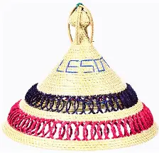
This is one of the most beautiful hat made of natural fibre being weave grass. The hat is used for sun protection.Learn more
Pottery
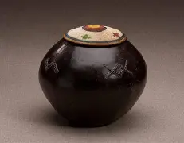It is an object made up of a clay, which is used in ceremonies like intiation school ceremoney. It is used to powre mahleu(basotho beer) welcoming them home.Moreover, used in ancestors ceromonies.The pottery is smooth in texture and little heavy.Learn more
Lefisoana
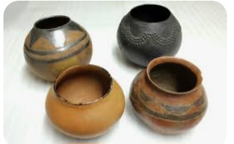It is an object made up of a clay, which is used in ceremonies like intiation school ceremoney. It is used to powre mahleu(basotho beer) welcoming them home.Moreover, used in ancestors ceromonies.The pottery is smooth in texture and little heavy.Learn more
Beadwork
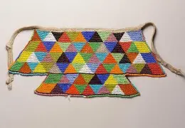It is a breacelet made of beats on different colors. They are light in weight.The bracelat are worn on hands,Neck,head or weighst for beauty and cultural believes. To enthusis more there are different choice of beats due to the reason or person 's will.Learn more
Lesokoana
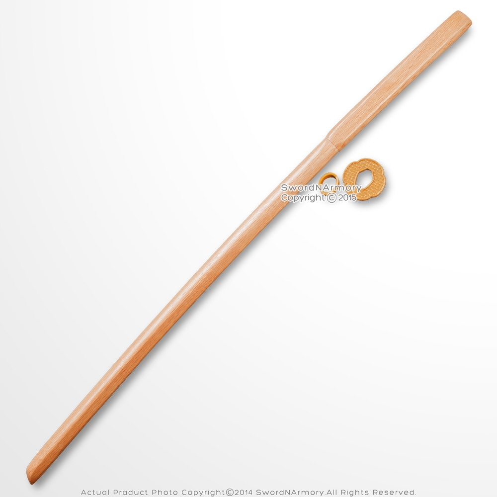It is an equipment made of a stick. This equipment is used to mix papa and meat.Learn more
Motlhotlo
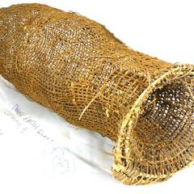Is an graft made of woven grass purpose being to filter unwanted material when make traditional alchohol.Learn more
seroto
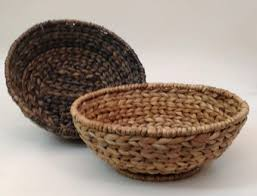Is an art made of woven grass.It was design to be placed on the flow in order for grandmothers and married girl to set on.Learn more
lefehlo
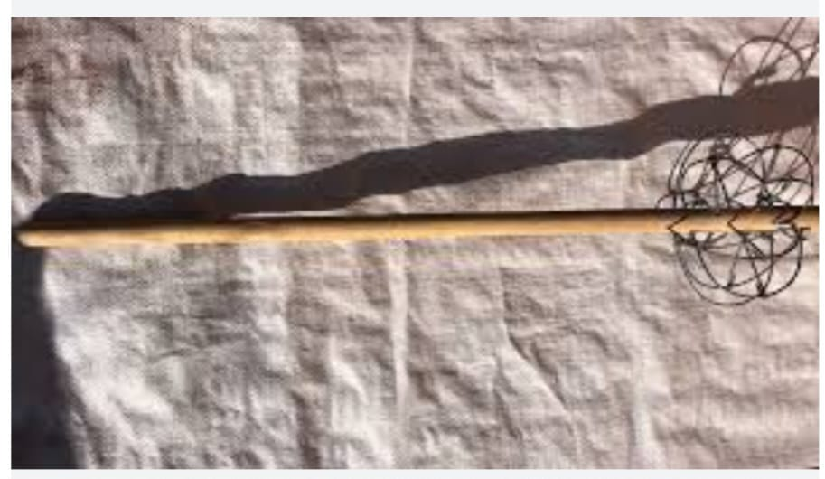Is an art made of wood.This art has sticks crossing at end which is used to mix porrage.Learn more
lefielo
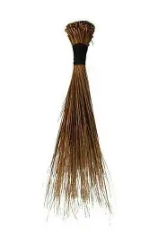It is a work of art made of woven grass which it is used to sweep. Learn more
Mokeke
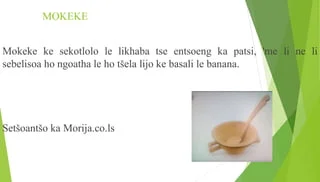This is are kitchen utensils being spoon.Learn more
Mopotjoane
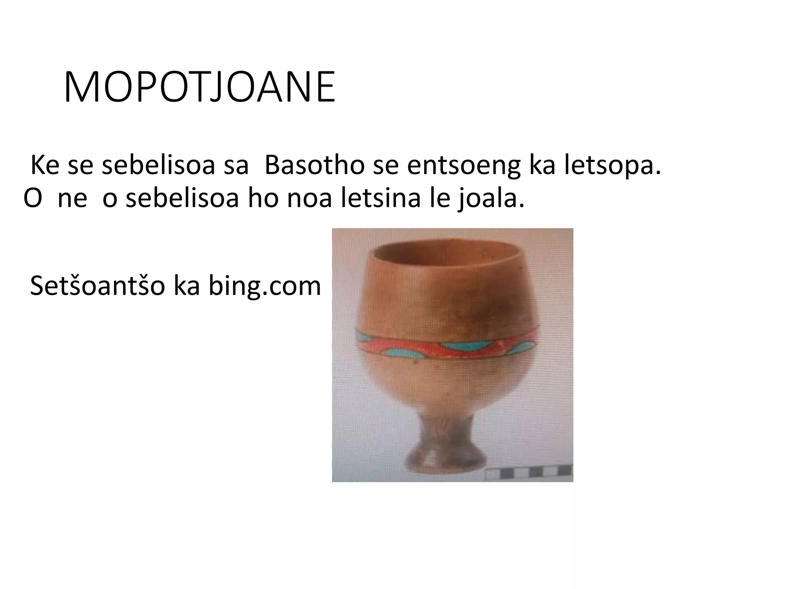This an utensil used for drinking home made beer called 'Letsina'.Learn more
Mohope
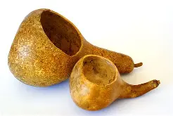This an utensil made up of pumpkin core, which was used my women to fetch some water at a spring.Learn more
Lekuka
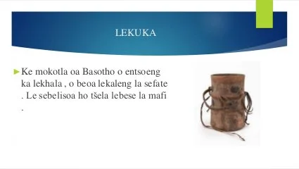This is Basotho bag made up of 'Lekhala'.Learn more